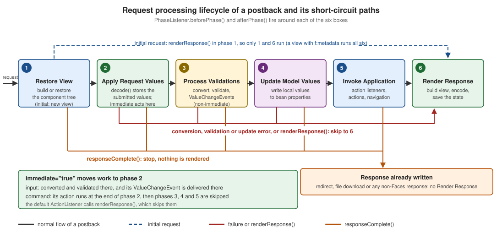

Request Processing Lifecycle
|
This content was generated with the assistance of AI and should be verified against the official documentation before being relied on in production. |
The lifecycle is the single most useful idea to understand in Jakarta Faces. Almost every question of the form "why is my
action method not called", "why does my bean still hold the old value", "why does the cancel button complain about
required fields" or "why does this listener run twice" is answered by knowing in which of six phases a piece of code
runs and which events can skip the phases after it. This page is written against Jakarta Faces 4.1 (API
jakarta.faces-api 4.1.2, Jakarta EE 11, Java 17 or later), Eclipse Mojarra 4.1.17 and Apache MyFaces Core 4.1.4. Faces
4.0 (Jakarta EE 10, Java 11 or later) has the same six phases and the same rules, and the differences that matter for
this page are listed in What Changed Between Versions. Faces 5.0 (Jakarta EE 12, Java 21 or later) is still an upcoming release (the
latest milestone is 5.0.0-M9), so nothing here describes it as current behaviour. The examples were compiled and run
in a scratch Maven WAR on Mojarra 4.1.17, Weld 6.0.4 and Tomcat 11.0.26 with Java 21 as the compiler release, and the
phase traces shown below are the real output of that run. The running scenario is the original Bookshelf — a
catalogue of books, authors and reviews — and this page uses its review form.
The Lifecycle at a Glance
Every request that reaches the FacesServlet runs through a jakarta.faces.lifecycle.Lifecycle. The specification
describes the lifecycle as two calls: execute() runs every phase up to, but not including, Render Response, and
render() runs Render Response. The six standard phases, in order, are:
| # | Phase | What the implementation does | Typical code that runs there |
|---|---|---|---|
1 |
Restore View |
Builds the component tree for the request: a new view for an initial request, the saved view for a postback. |
System events such as |
2 |
Apply Request Values |
Every component decodes the submitted request parameters into a submitted value (and, for components with |
|
3 |
Process Validations |
Every non-immediate input converts its submitted value into a local value, runs its validators and queues messages. |
Converters, validators, Bean Validation, |
4 |
Update Model Values |
Valid local values are written to the bean properties named by the |
Bean setters |
5 |
Invoke Application |
Action events are delivered: action listeners and the action method run and navigation is decided. |
|
6 |
Render Response |
The view is built or completed, rendered to the response and its state is saved. |
Getters, |

Two things in the figure are worth fixing in the mind early. The straight arrows are the only path that a successful,
non-immediate postback takes. And every other path is a shortcut forward: the lifecycle never goes back to an
earlier phase. A shortcut either jumps to Render Response (a request that failed validation, a request that asked for
renderResponse(), an initial request) or ends the lifecycle without rendering (responseComplete()).
Source: Jakarta EE Tutorial: The Lifecycle of a Jakarta Faces Application and Jakarta Faces 4.1: 2.2 Standard Request Processing Lifecycle Phases
Reaching the Lifecycle from Code
Application code seldom needs the Lifecycle object, but two paths lead to it. Inside a request, FacesContext.getLifecycle()
(since Faces 4.0) returns the instance that is processing it, and throws an IllegalStateException once the context has been
released. Outside a request, for example in a ServletContextListener that registers a listener at startup, the instance
comes from the factory: FactoryFinder.getFactory(FactoryFinder.LIFECYCLE_FACTORY) returns the LifecycleFactory, whose
getLifecycle(LifecycleFactory.DEFAULT_LIFECYCLE) returns the default instance (getLifecycleIds() lists the ids, and the
jakarta.faces.LIFECYCLE_ID init parameter of the FacesServlet, or the context parameter of the same name, selects another
one). The same instance serves every request of the web application, which is why a PhaseListener added to it must be
thread safe.
package org.example.bookshelf;
import jakarta.faces.FactoryFinder;
import jakarta.faces.context.FacesContext;
import jakarta.faces.event.PhaseListener;
import jakarta.faces.lifecycle.Lifecycle;
import jakarta.faces.lifecycle.LifecycleFactory;
public final class LifecycleAccess {
private LifecycleAccess() {
}
/** Inside a request: the lifecycle that is running now (Faces 4.0 and later). */
public static PhaseListener[] listenersOfCurrentRequest() {
Lifecycle lifecycle = FacesContext.getCurrentInstance().getLifecycle();
return lifecycle.getPhaseListeners();
}
/** Outside a request, for example from a ServletContextListener at startup. */
public static void register(PhaseListener listener) {
LifecycleFactory factory =
(LifecycleFactory) FactoryFinder.getFactory(FactoryFinder.LIFECYCLE_FACTORY);
Lifecycle lifecycle = factory.getLifecycle(LifecycleFactory.DEFAULT_LIFECYCLE);
lifecycle.addPhaseListener(listener);
}
}The class was compiled against the 4.1.2 API but, unlike the traces of this page, was not run.
Initial Requests and Postbacks
The Jakarta EE Tutorial distinguishes two kinds of requests that the lifecycle handles. An initial request is a user’s first request for a page, for example following a link or typing the address. A postback is the submission of a form on a page that an earlier response had delivered to the browser. The tutorial’s summary is that an initial request executes only Restore View and Render Response, because there is no user input to process, while a postback executes all the phases.
The specification gives the precise test. During Restore View the implementation finds the render kit for the request,
asks that render kit’s ResponseStateManager.isPostback() whether the request is a postback, and, if the servlet
container is displaying an error page, never treats the request as a postback. For the default HTML render kit a
request is a postback when it carries the hidden jakarta.faces.ViewState field (it is rendered into every
h:form). Application code asks the same question with FacesContext.isPostback(), which the phase listener below
logs.
For an initial request the specification adds a detail that matters for bookmarkable pages. After the empty view is
created, the implementation looks for view metadata. If the view has none, renderResponse() is called and the
lifecycle jumps to Render Response, which is the "only phases 1 and 6" case. If the view declares f:metadata, the
lifecycle continues through all six phases, so that f:viewParam can convert, validate and set its parameters and
f:viewAction can run, and that happens although FacesContext.isPostback() is false. The Bookshelf detail page
is such a page.
<!DOCTYPE html>
<html xmlns="http://www.w3.org/1999/xhtml"
xmlns:h="jakarta.faces.html"
xmlns:f="jakarta.faces.core">
<f:metadata>
<f:viewParam name="isbn" value="#{bookBean.isbn}" required="true"/>
<f:viewAction action="#{bookBean.load}"/>
</f:metadata>
<h:head><title>Book</title></h:head>
<h:body>
<h1>#{bookBean.title}</h1>
</h:body>
</html>package org.example.bookshelf.web;
import java.util.logging.Logger;
import jakarta.enterprise.context.RequestScoped;
import jakarta.inject.Named;
@Named
@RequestScoped
public class BookBean {
private static final Logger LOG = Logger.getLogger(BookBean.class.getName());
private String isbn;
private String title;
public String getIsbn() { return isbn; }
public void setIsbn(String isbn) { this.isbn = isbn; }
public String getTitle() { return title; }
public void load() {
LOG.info("viewAction: load() isbn=" + isbn);
title = "Dune"; // a real application would call a service here
}
}Source: Faces 4.1 VDL: f:viewAction and Jakarta Faces 4.1: 2.2 Standard Request Processing Lifecycle Phases
A GET of book.xhtml?isbn=123 produced this trace (the logging phase listener that prints it is shown in
PhaseListener). The request is not a postback, yet the model is updated and the view action runs in Invoke
Application:
BEFORE RESTORE_VIEW postback=false partial=false
AFTER RESTORE_VIEW validationFailed=false renderResponse=false responseComplete=false
BEFORE APPLY_REQUEST_VALUES postback=false partial=false
AFTER APPLY_REQUEST_VALUES validationFailed=false renderResponse=false responseComplete=false
BEFORE PROCESS_VALIDATIONS postback=false partial=false
AFTER PROCESS_VALIDATIONS validationFailed=false renderResponse=false responseComplete=false
BEFORE UPDATE_MODEL_VALUES postback=false partial=false
model: setIsbn(123)
AFTER UPDATE_MODEL_VALUES validationFailed=false renderResponse=false responseComplete=false
BEFORE INVOKE_APPLICATION postback=false partial=false
viewAction: load() isbn=123
AFTER INVOKE_APPLICATION validationFailed=false renderResponse=true responseComplete=false
BEFORE RENDER_RESPONSE postback=false partial=false
AFTER RENDER_RESPONSE validationFailed=false renderResponse=true responseComplete=falseRequesting the same page without the isbn parameter, which is required, stops after Process Validations with
validationFailed=true and goes straight to Render Response, exactly as a failed form does. The f:viewParam,
f:viewAction and view-parameter conversion rules have a page of their own in this section (View Parameters & View
Actions); here it is enough to know that metadata turns an initial request into a full lifecycle.
The Six Phases in Detail
The specification fixes what each phase must do. The sections below list the entry points that matter to application
code, the events that are delivered at the end of the phase, and the ways the phase can send the request to Render
Response early. At the end of phases 2, 3, 4 and 5 the UIViewRoot broadcasts the events that components and
validators queued during the phase to their listeners; the specification calls this common event processing.
Phase 1: Restore View
-
The implementation calls
ViewHandler.initView()first, which sets the character encoding for the request. -
It derives the view id from the request path, and decides whether the request is a postback (see above).
-
For a postback it calls
ViewHandler.restoreView(), withFacesContext.setProcessingEvents(false)around it so that system events are not published while the tree is rebuilt. If no view comes back the implementation throws aViewExpiredException. That is the exception a user sees after a session expired or after the server dropped the saved state; the exception handling page shows how to turn it into a friendly redirect. -
For an initial request it creates a new view (
ViewHandler.createView()), and uses the view metadata rule from the previous section to decide whether to callrenderResponse(). -
If the view is declared as a protected view, a view-protection check runs, which requires a token on non-postback requests and compares
RefererandOriginheaders. This is part of why a protected view cannot be reached from just any link. -
The implementation publishes
PostAddToViewEventfor a newly created view andPostRestoreStateEventfor every node of a restored tree.
What this means in practice: when your code runs in Restore View, the tree exists but no submitted value has been
applied to it, so do not read user input here. A @ViewScoped bean is created the first time an expression refers to
it, which for a new view is while it is rendered in phase 6; later postbacks of the same view find the same instance.
Phase 2: Apply Request Values
UIViewRoot.processDecodes() walks the tree and calls processDecodes() on each component. For an UIInput the
renderer’s decode() reads the request parameter and stores it as the component’s submitted value. The submitted
value is a raw String: it has not been converted, validated or copied to the bean.
Components that are activated record it here. A UICommand whose button or link was the cause of the request queues
an ActionEvent. Whether the event is delivered at the end of this phase or at the end of Invoke Application depends
on the component’s immediate property, which is the subject of The immediate Attribute.
This phase is also where a component can bring conversion and validation forward. An input component with
immediate="true" converts and validates in processDecodes(), queues its ValueChangeEvent here and, if it is
invalid afterwards, calls FacesContext.renderResponse().
If a decode() method or an event listener calls responseComplete(), the lifecycle ends after the phase. If it
calls renderResponse(), the lifecycle jumps to Render Response. Otherwise it continues to Process Validations.
Phase 3: Process Validations
UIViewRoot.processValidators() calls processValidators() on each component. UIInput.processValidators() calls
validate() unless the component is immediate, and validate() implements the algorithm below, which is worth
knowing by heart because it explains most messages that appear on a page:
-
Take the submitted value. If it is
null(no parameter was submitted for the component) validation is skipped, except that arequiredinput is still validated when the context parameter named byUIInput.ALWAYS_PERFORM_VALIDATION_WHEN_REQUIRED_IS_TRUEis true. If the context parameterjakarta.faces.INTERPRET_EMPTY_STRING_SUBMITTED_VALUES_AS_NULLis true, an empty submitted string is treated asnullfrom here on. -
Convert the submitted value to the type the component needs. The implementation uses the converter attached to the component, or, failing that, a converter registered for the type of the
valueexpression. AConverterExceptionqueues a message withFacesContext.addMessage()and marks the component invalid. -
Run the validation: first the
requiredcheck (an empty value fails it), then every attached validator, which includes the default validator that applies the Bean Validation constraints of the bound property when Bean Validation is available. A validator that throwsValidatorExceptionqueues its messages and marks the component invalid. -
If the component is still valid, store the converted value as the component’s local value, clear the submitted value, and, if the local value differs from the previous value, queue a
ValueChangeEvent.
Messages queued in this phase are displayed by h:messages and h:message during Render Response. An input
that is invalid after validate() calls FacesContext.renderResponse(). That call is the mechanism behind the most
important short-circuit of the lifecycle and has its own section (Short-Circuiting the Lifecycle). The implementation also sets the
flag that FacesContext.validationFailed() records and FacesContext.isValidationFailed() reads, which is why the phase
listener below prints validationFailed=true after a failed phase 3.
Phase 4: Update Model Values
If this phase is reached, the specification says that the request is assumed to be syntactically and semantically
valid. UIViewRoot.processUpdates() calls processUpdates() on each component and UIInput.updateModel() writes the
local value to the target of the value expression, and then clears the local value. updateModel() does nothing for
a component that is invalid, that has no local value, or that has no value expression. Only bean properties named by
value attributes are written; nothing else on the bean changes.
If the setter throws an exception the implementation queues an error message, hands an UpdateModelException to the
ExceptionHandler, marks the component invalid, and does not rethrow, so that the other components are still
processed. An invalid component after processUpdates() again calls renderResponse(). This is how a setter that
rejects a value (a business rule in a setter, or a type problem that a converter did not catch) ends up showing a
message and skipping Invoke Application.
Phase 5: Invoke Application
UIViewRoot.processApplication() broadcasts the events queued for this phase. That is where ActionEvent`s of
non-immediate commands are delivered to the registered listeners and to the default `ActionListener, which calls the
action method, passes its outcome to the NavigationHandler (see navigation), and so decides which view is rendered next. It is also
where the listener of an f:ajax behaviour runs (when the behaviour is not immediate) and where an f:viewAction
runs by default.
The specification requires the default ActionListener to call FacesContext.renderResponse() as its first step, so
that the lifecycle moves on to Render Response once the action has returned, whichever outcome it returned. That is the
reason a PhaseListener trace of a successful postback shows renderResponse=true after Invoke Application.
Phase 6: Render Response
Render Response is called as Lifecycle.render(). For a Facelets view the implementation calls the
ViewDeclarationLanguage.buildView() method, so that the component tree is populated from the XHTML, and publishes
PreRenderViewEvent. It then renders the tree depth first: each component’s encodeBegin(), encodeChildren() and
encodeEnd() (or the renderer’s equivalents) are called, and a component whose rendered property is false
produces no markup and none of its children are rendered. Rendering resolves the value expressions of output
components, which is when getters run. After the markup is written the implementation publishes PostRenderViewEvent
and saves the view’s state so that the next postback can restore it.
If this phase renders the page again after a failed postback, the inputs show the submitted values of the failed
request, not the (unchanged) bean properties: the user sees what they typed, next to the queued messages. That detail
is what lets a form re-display invalid input. The tutorial’s summary of the phase says the same thing: if errors were
found in phases 2, 3 or 4 on a postback, the original page is rendered again, with h:message and h:messages
showing the queued messages.
A Complete Example: The Bookshelf Review Form
The example below is used for the rest of the page. It is a review form with a required reviewer name, a rating
validated by f:validateLongRange, and three buttons: Save, a Cancel button that uses immediate correctly, and a
Clear button that does not need immediate at all.
<!DOCTYPE html>
<html xmlns="http://www.w3.org/1999/xhtml"
xmlns:h="jakarta.faces.html"
xmlns:f="jakarta.faces.core">
<h:head><title>Review a book</title></h:head>
<h:body>
<h1>Review a book</h1>
<h:form id="review">
<h:messages id="msgs"/>
<h:outputLabel for="reviewer" value="Your name"/>
<h:inputText id="reviewer" value="#{reviewBean.reviewer}" required="true"/>
<h:outputLabel for="rating" value="Rating (1-5)"/>
<h:inputText id="rating" value="#{reviewBean.rating}">
<f:validateLongRange minimum="1" maximum="5"/>
</h:inputText>
<h:outputLabel for="comment" value="Comment"/>
<h:inputTextarea id="comment" value="#{reviewBean.comment}">
<f:validateLength maximum="500"/>
</h:inputTextarea>
<h:commandButton id="save" value="Save review" action="#{reviewBean.submit}"/>
<!-- Runs in Apply Request Values; skips validation and the model update -->
<h:commandButton id="cancel" value="Cancel" action="#{reviewBean.cancel}" immediate="true"/>
<!-- Execute only the button, then re-render the form with reset inputs -->
<h:commandButton id="clear" value="Clear">
<f:ajax execute="@this" listener="#{reviewBean.clear}" render="@form" resetValues="true"/>
</h:commandButton>
</h:form>
</h:body>
</html>package org.example.bookshelf.web;
import java.io.Serializable;
import java.util.logging.Logger;
import jakarta.faces.application.FacesMessage;
import jakarta.faces.context.FacesContext;
import jakarta.faces.view.ViewScoped;
import jakarta.inject.Named;
@Named
@ViewScoped
public class ReviewBean implements Serializable {
private static final long serialVersionUID = 1L;
private static final Logger LOG = Logger.getLogger(ReviewBean.class.getName());
private String reviewer;
private Integer rating;
private String comment;
public String getReviewer() { return reviewer; }
public void setReviewer(String reviewer) { LOG.info(" model: setReviewer(" + reviewer + ")"); this.reviewer = reviewer; }
public Integer getRating() { return rating; }
public void setRating(Integer rating) { LOG.info(" model: setRating(" + rating + ")"); this.rating = rating; }
public String getComment() { return comment; }
public void setComment(String comment) { LOG.info(" model: setComment(" + comment + ")"); this.comment = comment; }
/** Application logic: Invoke Application, only if every earlier phase succeeded. */
public String submit() {
LOG.info(" action: submit() by " + reviewer + " rating " + rating);
FacesContext.getCurrentInstance().addMessage(null,
new FacesMessage(FacesMessage.SEVERITY_INFO, "Thanks, " + reviewer + "!", null));
return null; // stay on the same view
}
/** The Cancel button: the model has NOT been updated when this runs. */
public String cancel() {
LOG.info(" action: cancel() reviewer=" + reviewer);
return "catalogue?faces-redirect=true";
}
/** The Ajax Clear button: only the button is executed, so no input is decoded or validated. */
public void clear() {
LOG.info(" listener: clear()");
reviewer = null;
rating = null;
comment = null;
}
}The table says where each piece of this page runs on a postback that clicks Save:
| Piece of code | Phase | Why |
|---|---|---|
|
3 Process Validations |
They are validators, run by |
|
4 Update Model Values |
|
|
5 Invoke Application |
The default |
|
5, displayed in 6 |
A queued message is shown by |
The |
6 Render Response |
Output components evaluate their expressions while encoding |
A valid postback (reviewer Ana, rating 5) produced this trace. All six phases ran, the setters ran between
Process Validations and Invoke Application, and the action ran last:
BEFORE RESTORE_VIEW postback=true partial=false
AFTER RESTORE_VIEW validationFailed=false renderResponse=false responseComplete=false
BEFORE APPLY_REQUEST_VALUES postback=true partial=false
AFTER APPLY_REQUEST_VALUES validationFailed=false renderResponse=false responseComplete=false
BEFORE PROCESS_VALIDATIONS postback=true partial=false
AFTER PROCESS_VALIDATIONS validationFailed=false renderResponse=false responseComplete=false
BEFORE UPDATE_MODEL_VALUES postback=true partial=false
model: setReviewer(Ana)
model: setRating(5)
model: setComment(Great)
AFTER UPDATE_MODEL_VALUES validationFailed=false renderResponse=false responseComplete=false
BEFORE INVOKE_APPLICATION postback=true partial=false
action: submit() by Ana rating 5
AFTER INVOKE_APPLICATION validationFailed=false renderResponse=true responseComplete=false
BEFORE RENDER_RESPONSE postback=true partial=false
AFTER RENDER_RESPONSE validationFailed=false renderResponse=true responseComplete=falseFollowing One Postback
The diagram shows the same successful postback as objects talking to each other. The alternative branch is the validation failure of the next section.
The same decisions as a flowchart, as a question to ask when a request does something unexpected:
Short-Circuiting the Lifecycle
The lifecycle changes its route through two methods on FacesContext, and every shortcut in the figure is one of
them being called.
| Method | Effect | Who calls it |
|---|---|---|
|
As soon as the current phase has completed, control passes to Render Response and the phases in between are skipped. |
A component after a conversion, validation or update error; the default |
|
The HTTP response has already been generated (for example a redirect or a file) and the lifecycle ends as soon as the current phase has completed: nothing is rendered. |
Your code, after writing the response itself |
|
Sets the flag read by |
The implementation, when a conversion or validation error is found |
Conversion and validation failures
When any input in the form is invalid, the lifecycle never reaches Update Model Values and never reaches Invoke
Application. Each UIInput calls renderResponse() when it is invalid after validation, so the next phase is Render
Response. The page is rendered again, from the same component tree, showing the submitted values and the queued
messages. The bean has not been touched, so no property holds a half-validated value, and the action method has not
run, so it never has to check that its inputs are valid. That is the contract that makes Faces action methods short:
if the method is running, the inputs were valid.
A reviewer who submits an empty name and a rating of 9 (both invalid) produces:
BEFORE RESTORE_VIEW postback=true partial=false
AFTER RESTORE_VIEW validationFailed=false renderResponse=false responseComplete=false
BEFORE APPLY_REQUEST_VALUES postback=true partial=false
AFTER APPLY_REQUEST_VALUES validationFailed=false renderResponse=false responseComplete=false
BEFORE PROCESS_VALIDATIONS postback=true partial=false
AFTER PROCESS_VALIDATIONS validationFailed=true renderResponse=true responseComplete=false
BEFORE RENDER_RESPONSE postback=true partial=false
AFTER RENDER_RESPONSE validationFailed=true renderResponse=true responseComplete=falseNo setReviewer() and no submit() lines appear. Submitting abc as the rating, a conversion failure, gives an
identical trace: the Integer converter fails during phase 3 (validate() converts before it validates), the message
is queued, the component is marked invalid, and the lifecycle jumps to phase 6. The text of the messages depends on the
locale and on the implementation’s bundle, so it is not reproduced here; the messages and i18n page shows how to
replace it.
Three consequences are worth remembering:
-
When an action method "is not called", look at the page for a message first. A validation error on a field the user cannot see (a hidden field, a field inside a collapsed panel that is still in the tree, a
requiredinput that was not filled) skips the action silently if there is noh:messageson the page. -
A conversion failure and a validation failure are the same path. Both stop before phase 4.
-
On the re-rendered page an input that holds a submitted value shows what the user typed, not the bean’s value, so the user never loses input to a failed validation.
renderResponse()
Call FacesContext.renderResponse() when a listener has decided that the rest of the form must not be processed but
the same page (or the target of a navigation) must be rendered. The lifecycle then skips straight to Render Response.
The typical use is a value-change or system-event listener that rebuilds part of the view. The method is a request, not
an immediate jump: the current phase finishes first, which is why an event listener can call it and still let the other
listeners of the same event run. FacesContext.getRenderResponse() reports whether it has been called.
responseComplete()
Call FacesContext.responseComplete() after writing the response yourself. The specification lists three cases: a
redirect, a response generated by another technology, and a response that is just the bytes of a resource. The
Bookshelf catalogue offers the most common one, a download. The bean below writes a CSV file and tells Faces that
there is nothing to render.
<!DOCTYPE html>
<html xmlns="http://www.w3.org/1999/xhtml"
xmlns:h="jakarta.faces.html"
xmlns:ui="jakarta.faces.facelets">
<h:head><title>Catalogue</title></h:head>
<h:body>
<h1>Catalogue</h1>
<ul>
<ui:repeat value="#{catalogueBean.books}" var="b">
<li>#{b[0]} by #{b[1]}</li>
</ui:repeat>
</ul>
<h:form id="export">
<h:commandButton id="csv" value="Export CSV" action="#{catalogueBean.exportCsv}"/>
</h:form>
<h:link outcome="review" value="Write a review"/>
</h:body>
</html>package org.example.bookshelf.web;
import java.io.IOException;
import java.io.Writer;
import java.nio.charset.StandardCharsets;
import java.util.List;
import jakarta.enterprise.context.RequestScoped;
import jakarta.faces.context.ExternalContext;
import jakarta.faces.context.FacesContext;
import jakarta.inject.Inject;
import jakarta.inject.Named;
@Named
@RequestScoped
public class CatalogueBean {
private static final List<String[]> BOOKS = List.of(
new String[] {"Dune", "Frank Herbert"},
new String[] {"Neuromancer", "William Gibson"});
@Inject
private FacesContext facesContext;
public List<String[]> getBooks() { return BOOKS; }
/** Writes the response itself, so the lifecycle must not render a view afterwards. */
public void exportCsv() throws IOException {
ExternalContext ec = facesContext.getExternalContext();
ec.responseReset();
ec.setResponseContentType("text/csv");
ec.setResponseCharacterEncoding(StandardCharsets.UTF_8.name());
ec.setResponseHeader("Content-Disposition", "attachment; filename=\"catalogue.csv\"");
Writer out = ec.getResponseOutputWriter();
out.write("title,author\n");
for (String[] book : BOOKS) {
out.write(book[0] + "," + book[1] + "\n");
}
out.flush();
facesContext.responseComplete(); // skip Render Response
}
}Source: Jakarta Faces 4.1: 2 Request Processing Lifecycle (section 2.1.3, Faces Request Generates Non-Faces Response) and API: ExternalContext
Clicking the button returns text/csv;charset=UTF-8 with the two catalogue rows, and the trace ends after Invoke
Application, with no Render Response phase at all (the export data here is the fixed catalogue; an export of
user-supplied text would need the escaping rules for spreadsheet formulas that the file download page of this section
discusses):
BEFORE INVOKE_APPLICATION postback=true partial=false
AFTER INVOKE_APPLICATION validationFailed=false renderResponse=true responseComplete=trueForgetting responseComplete() after writing a response is the classic mistake here. When the call was removed in the
scratch run, the response was still text/csv, the two CSV rows were followed by the HTML of the catalogue page in the
same body, and Mojarra logged a warning that it was skipping an attempt to set the buffer size on a committed response:
Faces carried on to Render Response and wrote the view after the bytes you had already sent. A redirect produced
with a navigation outcome such as catalogue?faces-redirect=true (used by the Cancel button above) makes the
implementation call responseComplete() for you, which is why the Cancel trace in the next section ends after phase 2.
The immediate Attribute
immediate exists on input components (h:inputText and the other UIInput components, through
EditableValueHolder), on command components (h:commandButton, h:commandLink, through ActionSource), on the
f:ajax behaviour and on f:viewAction. It has one meaning: do the processing that normally comes later in the
lifecycle now, at the end of Apply Request Values. It does not skip validation. The MyFaces documentation puts it
plainly: many developers think that immediate skips the Process Validations phase, but it only makes the component
be processed in Apply Request Values.
| Where | What changes |
|---|---|
Input ( |
Conversion, validation and the |
Command ( |
The |
|
|
|
|
The consequence people miss is the one in the second row. While an immediate command’s action runs, the non-immediate inputs of the form have a submitted value but no local value, and the bean has not been updated. Whatever the action does, it cannot read the user’s other input from the model. The tutorial spells out the combinations: if the button and an input are both immediate, the input’s new value is converted, validated and available to the button’s processing, because both are handled while the request parameters are applied; if only the button is immediate, the event is processed without the input’s value reaching the model.
Source: Jakarta EE Tutorial: The immediate Attribute, Faces 4.1 VDL: f:ajax and Faces 4.1 VDL: f:viewAction
A Cancel button done correctly
A Cancel button is the use for which immediate was designed: the user wants to leave the page, any validation
errors in the half-filled form are irrelevant, and the typed data is to be thrown away. The correct form combines
immediate="true" with an action that navigates away, and does not read the form’s data:
<h:commandButton id="cancel" value="Cancel" action="#{reviewBean.cancel}" immediate="true"/>/** The Cancel button: the model has NOT been updated when this runs. */
public String cancel() {
LOG.info(" action: cancel() reviewer=" + reviewer);
return "catalogue?faces-redirect=true";
}Clicking Cancel with an empty required name and a rating of 9 produced a 302 redirect to the catalogue and this trace.
The action ran at the end of phase 2 and saw reviewer=null, because Update Model Values never ran, and the
redirect completed the response, so there is no Render Response either:
BEFORE RESTORE_VIEW postback=true partial=false
AFTER RESTORE_VIEW validationFailed=false renderResponse=false responseComplete=false
BEFORE APPLY_REQUEST_VALUES postback=true partial=false
action: cancel() reviewer=null
AFTER APPLY_REQUEST_VALUES validationFailed=false renderResponse=true responseComplete=trueWhen the action returns a view id without faces-redirect=true, or returns null, the lifecycle also jumps to Render
Response and the target view (or the same view with the submitted values of its non-immediate inputs) is rendered
in the same response. The MyFaces concept page, which describes the behaviour in older terms, says that a null outcome lets processing
continue as normal; the 4.1 specification describes a default ActionListener that always calls renderResponse(), and
Mojarra 4.1.17 behaves that way in the scratch run, so do not rely on a null outcome of an immediate command
continuing to Process Validations. If the only purpose of the control is to navigate, h:button or h:link with an
outcome does it with a plain GET and no lifecycle for the form at all.
An immediate input as a high-priority field
The second legitimate use is to give one input priority, so that if it is wrong the user sees only its message instead of a screen of errors for fields that depend on it. Here the reviewer name is validated first:
<!DOCTYPE html>
<html xmlns="http://www.w3.org/1999/xhtml"
xmlns:h="jakarta.faces.html"
xmlns:f="jakarta.faces.core">
<h:head><title>Priority</title></h:head>
<h:body>
<h:form id="review">
<h:messages id="msgs"/>
<h:inputText id="reviewer" value="#{reviewBean.reviewer}" required="true" immediate="true"
valueChangeListener="#{reviewBean.reviewerChanged}"/>
<h:inputText id="rating" value="#{reviewBean.rating}" required="true">
<f:validateLongRange minimum="1" maximum="5"/>
</h:inputText>
<h:commandButton id="save" value="Save review" action="#{reviewBean.submit}"/>
</h:form>
</h:body>
</html>/** Delivered in Apply Request Values for an immediate input. */
public void reviewerChanged(ValueChangeEvent event) {
LOG.info(" valueChange: reviewer " + event.getOldValue() + " -> " + event.getNewValue()
+ " in " + FacesContext.getCurrentInstance().getCurrentPhaseId().getName());
}With an empty reviewer the request ends after phase 2, and the rating’s required message is never queued:
BEFORE APPLY_REQUEST_VALUES postback=true partial=false
AFTER APPLY_REQUEST_VALUES validationFailed=true renderResponse=true responseComplete=false
BEFORE RENDER_RESPONSE postback=true partial=falseWith a valid reviewer Ana and an empty rating, the value-change event is delivered during phase 2, and only then do
the non-immediate inputs fail in phase 3:
BEFORE APPLY_REQUEST_VALUES postback=true partial=false
valueChange: reviewer null -> Ana in APPLY_REQUEST_VALUES
AFTER APPLY_REQUEST_VALUES validationFailed=false renderResponse=false responseComplete=false
BEFORE PROCESS_VALIDATIONS postback=true partial=false
AFTER PROCESS_VALIDATIONS validationFailed=true renderResponse=true responseComplete=falseBetter than immediate: execute only what you need
Most uses of immediate that go beyond the two above are attempts to say "process only this part of the form". Since
Faces 2.0 there is a direct way to say that with Ajax: the execute attribute of f:ajax names the components that
take part in the execute phases, and @this (the default) names only the component that fired the request. The Clear
button of the review form uses it. The request carries the whole form, but only the button is decoded, validated and
updated, so there is no validation to skip and no immediate to reason about; resetValues="true" then resets the
inputs listed in render (the UIViewRoot.resetValues() method) so that the form shows empty fields instead of the
previously submitted values.
<h:commandButton id="clear" value="Clear">
<f:ajax execute="@this" listener="#{reviewBean.clear}" render="@form" resetValues="true"/>
</h:commandButton>Source: Faces 4.1 VDL: f:ajax and API: UIViewRoot
The scratch run returned a partial response with the form re-rendered and both inputs empty, and the trace shows all six
phases with partial=true: the five execute phases ran for the button only, and clear() ran in Invoke Application.
PhaseListener
A jakarta.faces.event.PhaseListener is told before and after each phase. It is the supported way to observe or
influence the lifecycle from outside the components: logging, timing, a security gate, request-wide setup and tear-down.
The interface has three methods. getPhaseId() returns the PhaseId the listener wants (RESTORE_VIEW,
APPLY_REQUEST_VALUES, PROCESS_VALIDATIONS, UPDATE_MODEL_VALUES, INVOKE_APPLICATION, RENDER_RESPONSE, or
ANY_PHASE for all of them). beforePhase(PhaseEvent) and afterPhase(PhaseEvent) are called around the phase; in
the 4.1 API both are default methods, so a listener overrides only the one it needs. The PhaseEvent carries the
FacesContext and the PhaseId.
Source: API: PhaseListener
The rules that the specification sets for listeners are precise and worth knowing:
-
For each phase, the implementation selects the listeners whose
getPhaseId()is that phase orANY_PHASE. It calls everybeforePhase()in the order the listeners were registered, then runs the phase, then calls everyafterPhase()in the reverse order. -
If a
beforePhase()listener calledrenderResponse()orresponseComplete(), the phase itself is not executed (butafterPhase()still is). The scratch run confirmed it on Mojarra: a throwaway listener that calledrenderResponse()before Process Validations made an invalid rating of 9 pass unchecked, and the trace showsvalidationFailed=false. Treat it as a power tool: it skips the work of the phase. -
If
beforePhase()was called on a listener, itsafterPhase()is guaranteed to be called, even if the phase threw. An exception thrown by a listener is published to theExceptionHandlerand theafterPhase()of the listeners whosebeforePhase()had not run is skipped. -
Listeners must be thread-safe. One instance serves every request, so per-request data belongs in the
FacesContext(its attribute map), not in fields. -
A listener may call
renderResponse()orresponseComplete()itself, the same two methods as any other code.
package org.example.bookshelf.web;
import java.util.logging.Logger;
import jakarta.faces.context.FacesContext;
import jakarta.faces.event.PhaseEvent;
import jakarta.faces.event.PhaseId;
import jakarta.faces.event.PhaseListener;
public class LoggingPhaseListener implements PhaseListener {
private static final long serialVersionUID = 1L;
private static final Logger LOG = Logger.getLogger(LoggingPhaseListener.class.getName());
@Override
public PhaseId getPhaseId() {
return PhaseId.ANY_PHASE;
}
@Override
public void beforePhase(PhaseEvent event) {
FacesContext context = event.getFacesContext();
LOG.info(() -> "BEFORE %-20s postback=%b partial=%b".formatted(
event.getPhaseId().getName(),
context.isPostback(),
context.getPartialViewContext().isPartialRequest()));
}
@Override
public void afterPhase(PhaseEvent event) {
FacesContext context = event.getFacesContext();
LOG.info(() -> "AFTER %-20s validationFailed=%b renderResponse=%b responseComplete=%b".formatted(
event.getPhaseId().getName(),
context.isValidationFailed(),
context.getRenderResponse(),
context.getResponseComplete()));
}
}<?xml version="1.0" encoding="UTF-8"?>
<faces-config xmlns="https://jakarta.ee/xml/ns/jakartaee"
xmlns:xsi="http://www.w3.org/2001/XMLSchema-instance"
xsi:schemaLocation="https://jakarta.ee/xml/ns/jakartaee https://jakarta.ee/xml/ns/jakartaee/web-facesconfig_4_1.xsd"
version="4.1">
<lifecycle>
<phase-listener>org.example.bookshelf.web.LoggingPhaseListener</phase-listener>
</lifecycle>
</faces-config>Every trace on this page was produced by this listener. There are three ways to attach a PhaseListener:
-
In
faces-config.xml, as above: application-wide, every request. The specification names this thephase-listenerelement of the application configuration resources. -
Per view, with
f:phaseListener, which registers aPhaseListeneron theUIViewRootit is nested in. It takes atypeattribute (a class name) or abindingattribute (an expression evaluating to a listener). -
Programmatically with
Lifecycle.addPhaseListener()on the lifecycle obtained from theLifecycleFactory(see Reaching the Lifecycle from Code; the specification showsFactoryFinder.getFactory(FactoryFinder.LIFECYCLE_FACTORY)). Duplicate registrations should be prevented and logged by the implementation.
Two classes of the 4.1 API itself are phase listeners (ELResolverInitPhaseListener and
HttpMethodRestrictionsPhaseListener), which suggests the intended use: infrastructure that has to
act at a precise point of every request. For application work, prefer the narrower tools when they fit: a system
event listener for "when this component is added", a f:viewAction for "before this view renders", an
ExceptionHandler for errors. A PhaseListener is the right tool when the thing you want to observe is the phase
boundary itself.
Source: Faces 4.1 VDL: f:phaseListener and API: Lifecycle
The Partial (Ajax) Lifecycle
An Ajax request goes through the same six phases. What changes is how much of the tree each phase visits. The tutorial’s
section "Partial Processing and Partial Rendering" and the "Ajax Request Lifecycle" section of the Ajax chapter describe
it this way: the state of an Ajax request is captured by the PartialViewContext, which says which components are
targeted for processing and for rendering, and PartialViewContext.processPartial(PhaseId) does the partial tree
traversal for each phase.
-
Detection. The JavaScript API sends the request with the header
Faces-Request: partial/ajaxand the parametersjakarta.faces.partial.ajax=true,jakarta.faces.source(the id of the element that triggered the request) andjakarta.faces.ViewState.PartialViewContext.isPartialRequest()is true for such a request, and each phase checks it before deciding between full and partial processing. -
Execute. In phases 2, 3 and 4 the implementation calls
processPartial()for the ids in theexecutelist instead of walking the whole tree, so only those components (and their descendants) decode, convert, validate and update.f:ajaxdefaultsexecuteto@this; the JavaScript API’s default is also@this. Among the keywords are@all,@none,@thisand@form. -
Invoke Application. The
f:ajaxlistenerruns here, once, unlessimmediateis set. -
Render. Render Response renders only the ids in the
renderlist (default@none), writes atext/xmlpartial response and setsCache-control: no-cache. The response is a list ofupdateoperations thatfaces.ajax.responseapplies to the DOM, followed by an update of the view state.
Because validation still happens, the short-circuit still happens. The review-ajax.xhtml page is the review
form with a Save button that submits through f:ajax:
<!DOCTYPE html>
<html xmlns="http://www.w3.org/1999/xhtml"
xmlns:h="jakarta.faces.html"
xmlns:f="jakarta.faces.core">
<h:head><title>Review a book (Ajax)</title></h:head>
<h:body>
<h:form id="review">
<h:messages id="msgs"/>
<h:inputText id="reviewer" value="#{reviewBean.reviewer}" required="true"/>
<h:inputText id="rating" value="#{reviewBean.rating}">
<f:validateLongRange minimum="1" maximum="5"/>
</h:inputText>
<h:commandButton id="save" value="Save review" action="#{reviewBean.submit}">
<f:ajax execute="@form" render="@form"/>
</h:commandButton>
</h:form>
</h:body>
</html>Source: Jakarta EE Tutorial: Ajax Request Lifecycle and Jakarta Faces 4.1: 2.2 Standard Request Processing Lifecycle Phases
A rating of 9 in an Ajax submit produced the same shape as a full-page failure, with partial=true on every line, and the
response still returned the form in an update element together with the queued message (shortened here):
BEFORE PROCESS_VALIDATIONS postback=true partial=true
AFTER PROCESS_VALIDATIONS validationFailed=true renderResponse=true responseComplete=false
BEFORE RENDER_RESPONSE postback=true partial=true
AFTER RENDER_RESPONSE validationFailed=true renderResponse=true responseComplete=false<?xml version='1.0' encoding='UTF-8'?>
<partial-response><changes>
<update id="review"><![CDATA[ <form id="review" ...> <ul id="review:msgs"><li> review:rating: ... </li></ul> ... </form>]]></update>
<update id="j_id1:jakarta.faces.ViewState:0"><![CDATA[...]]></update>
</changes></partial-response>The practical rules follow from this. The render list must contain the component that displays the messages, or an
Ajax failure will be invisible to the user. The execute list must contain every input whose value the action needs,
otherwise the bean property keeps its old value while the action runs. Validation errors on components that are not in
execute do not occur, because those components are not processed. The Ajax page of this section covers the full
f:ajax attribute set, the JavaScript API and the response format.
Comparison with the ASP.NET Web Forms Page Life Cycle
Faces and ASP.NET Web Forms are the two classic server-side component frameworks, and their lifecycles map onto each other closely enough that the comparison is useful in both directions. The Web Forms side is described in Page Life Cycle and Postback; the state that rides on the round trip in ViewState and Control State; and the validation controls in Validation Controls.
| Idea | Jakarta Faces | ASP.NET Web Forms |
|---|---|---|
Component tree restored from state |
Phase 1 Restore View, state from the |
ViewState is loaded between |
Is this a postback? |
|
|
Reading request data into controls |
Phase 2: decode to a submitted value |
Postback data is loaded onto controls before |
Converting and validating |
Phase 3, automatic, for every non-immediate input, before the bean is touched |
Validators run when a control with |
Writing to the data model |
Phase 4, a distinct step, only when everything is valid |
Your own code, in an event handler |
Event handlers |
Phase 5, only on valid input |
After |
Per-request code |
No |
|
Last chance to change the tree |
|
|
Opting out of validation |
|
|
Partial rendering |
|
|
Event order is visible with |
A |
Overriding the |
Three differences matter when moving between them. First, Faces is stricter: an invalid form never reaches an event
handler, so there is no IsValid check to forget, and immediate is the explicit escape hatch where Web Forms uses a
flag on the control. Second, Faces separates the model update (phase 4) from the action (phase 5), so a bean property
has its new value by the time the action runs without the action copying it. Third, Faces has a real partial
lifecycle for Ajax, where the Web Forms ajax-and-client-side page describes UpdatePanel as running the entire page
life cycle and trimming the response. Both frameworks share the lesson that the order of events is the thing to learn
first.
What Changed Between Versions
The six phases have existed since JSF 1.0 and the rules above are the same in Faces 4.0 and 4.1. These are the changes that touch the lifecycle:
| Version | Change relevant to the lifecycle |
|---|---|
JSF 2.0 |
Ajax and partial processing and rendering ( |
JSF 2.2 |
|
Faces 3.0 |
The package rename from |
Faces 4.0 |
The JavaScript resource is |
Faces 4.1 |
The additions listed in the section’s version baseline ( |
Faces 5.0 (upcoming, milestone |
Not described here as current behaviour |
Mojarra and MyFaces
Both implementations implement the same specification text for the lifecycle, so the phase order, the events and the
renderResponse() and responseComplete() rules on this page are the contract on both. Neither the specification
nor the documentation pages checked for this page lists a difference in the route a request takes through the six
phases; what differs is the surrounding detail, such as the text of the validation messages and the format of the
log lines. The traces and the skip behaviour of a renderResponse() called before a phase were verified on Mojarra
4.1.17 only. MyFaces 4.1.4 was not run for this page, and its concept page for immediate (linked below) is the
documentation to read for that implementation.
Source: Apache MyFaces: Core Concepts and Apache MyFaces Core 4.1
Where the Books Are Outdated
The lifecycle is the part of the older Faces books that has aged best, because the six phases did not change. The
classic descriptions (Burns and Schalk, Dudney et al., Mann) are still a good account of the order of phases, of
immediate and of renderResponse() / responseComplete(). Read them with these corrections:
-
Everything in them uses
javax.faces.*. The current packages arejakarta.faces.*, and thePhaseListenerof Faces 4.1 has defaultbeforePhase()andafterPhase()methods, so you no longer write empty bodies. -
Their view examples are JSP pages, where the JSP tag handlers add the components while the page renders. With Facelets, which is the only view declaration language of Faces 4.0 and later, the tree is built by the
ViewDeclarationLanguage, and view metadata and view actions (JSF 2.0 and 2.2) make an initial request run the full lifecycle, which the JSP-era books never mention. -
The Ajax chapters (Jacobi and Fallows, and the early Ajax chapters of the others) describe hand-written
XMLHttpRequestcode, Weblets, ajax4jsf and Dynamic Faces; since JSF 2.0 the lifecycle itself knows partial requests (PartialViewContext,f:ajax), and since Faces 4.0 the script isfaces.js. -
Some books describe
immediateas a way to skip validation or to run business logic "early". It does neither; it moves conversion, validation or action delivery to Apply Request Values, with the consequences in The immediate Attribute. -
The pre-2.0 books know no system events.
PostAddToViewEvent,PreRenderViewEventand the other component system events publish around the phases in the sequence described above. -
@ManagedBean, thejavax.faces.beanscopes,ValueBindingandMethodBindingappear in their lifecycle examples; the current examples use CDI@Namedbeans,@ViewScoped(jakarta.faces.view.ViewScoped) and theMethodExpressionthat theactionattribute resolves to.
Common Pitfalls
-
The action method is not called. Look for a queued message. A validation or conversion error anywhere in the executed part of the form skips phases 4 and 5. Put an
h:messagesin the form while developing, and log the phases with the listener above. -
A getter runs several times. It runs once for every expression that refers to it, in every phase in which the expression is evaluated, and Render Response evaluates it while encoding. Keep getters free of logic and of queries; load data in a view action or a listener instead.
-
The bean still has the old value after a cancel. That is
immediateworking. The model was never updated. -
A button whose
renderedexpression is false on the postback is never activated. Phase 2 skips a component whoserenderedproperty is false, so it is not decoded and its action is not called. The expression is evaluated again on the postback, so it must give the same answer then as when the page was rendered. -
ViewExpiredExceptionon the first click after a long idle time. Phase 1 could not restore the view. The exception handling page shows a redirect to the same page. -
Redirecting from an action without completing the response. Use a navigation outcome with
faces-redirect=true, or callresponseComplete()afterExternalContext.redirect(). -
A
PhaseListenerthat keeps request data in fields. There is one instance for all requests. Use theFacesContextattribute map.
References
-
Jakarta Faces 4.1 Specification (2.2 Standard Request Processing Lifecycle Phases, 3.2.1 ActionSource, 12.1 Lifecycle, 12.3 PhaseListener, 13 Ajax Integration, 14 JavaScript API)
-
Jakarta Faces 4.1 API documentation (FacesContext, PhaseListener, PhaseId, PhaseEvent, Lifecycle, UIInput, UICommand, UIViewRoot, PartialViewContext)
-
Jakarta Faces 4.1 VDL documentation (f:ajax, f:viewAction, f:phaseListener)
-
Jakarta EE Tutorial: The Lifecycle of a Jakarta Faces Application
-
Page Life Cycle and Postback (ASP.NET Web Forms, on this site)